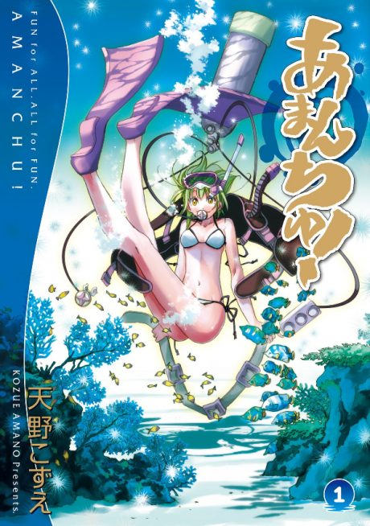

Anime

Manga2016 · Comedy, Slice of Life
Amanchu!
あまんちゅ！
AniList7.1
Animeter—
2 seasons24 ep
MangaUnclear
Anime finished. Where does the manga pick up?
StatusNo source yet
We looked for where the anime ends in the manga but found no source we trust yet. The manga is 102 chapters, finished.